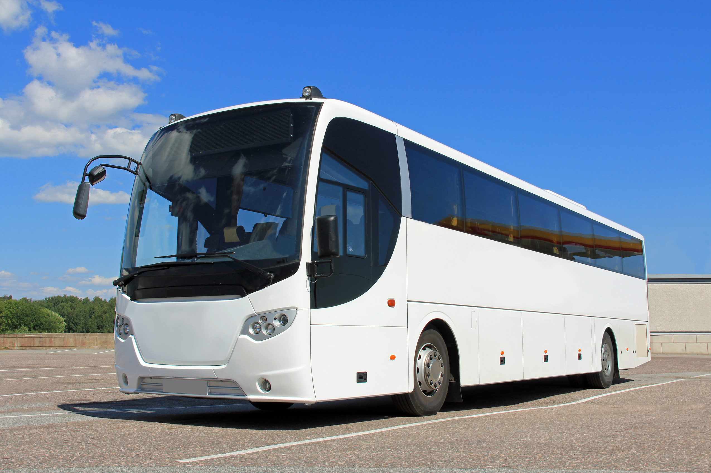
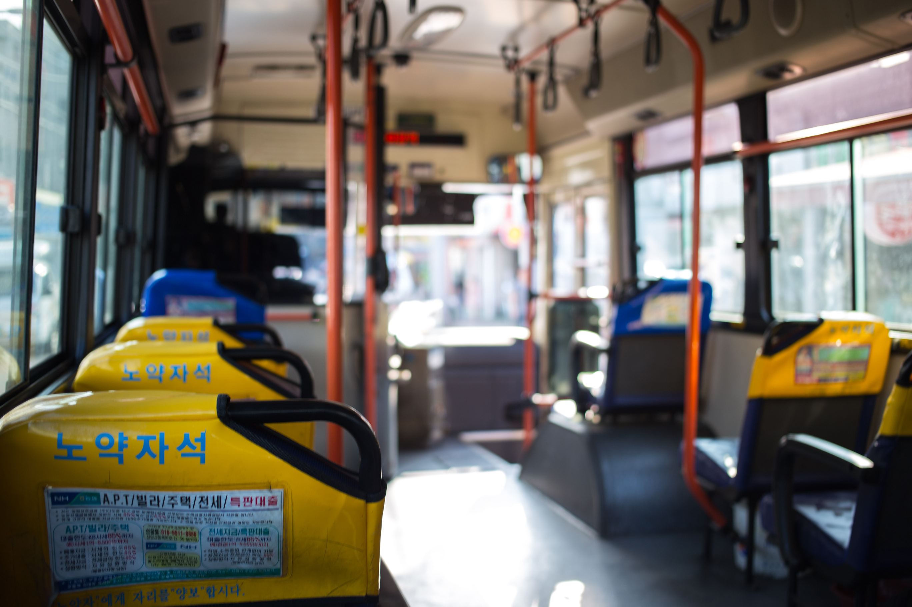

버스광고 마케팅
버스를 대중교통수단으로 이용하는 시민들에게
광고주의 타깃에 맞는 노선을 선택하여 노출하는 인기 있는 광고입니다.
-

지하철 광고와 마찬가지로 시민들이
가장 많이 이용하는 교통수단입니다. -

광고주의 타깃에 맞는 노선을
디테일하게 선택, 진행 가능합니다. -

큰 광고 면적으로 인하여 광고 대비
임팩트 있는 광고 집행이 가능합니다.

-
외부바디
광고 면이 넓어 높은 시선 집중률을 자랑하고 승객,
보행자, 운전자에게 지속적으로 광고를 노출합니다. -
외부중앙문
승차문과 하차문 사이 버스 번호 위에 설치되어
승객들에게 자연스럽게 노출되는 광고입니다. -
중앙문
버스 내부의 가장 큰 광고 면으로 집중도가 높고
하차문 바로 옆에 있어서 자연스럽게 노출됩니다.
-
시트광고
앉은 자리에서 편안하게 볼 수 있는 광고로
QR코드를 활용해 직접적인 구매를 유도합니다. -
창문
창문 윗부분에 설치되어 집중도가 높으며,
가는 시간 동안 광고 내용을 여러 번 읽게 됩니다. -
내부상단
서 있는 승객들이 볼 수 있는 위치에 있고 광고
규격이 커서 원하는 내용을 모두 게재합니다.
